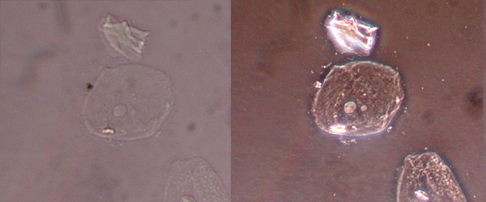

Quantitative Phase Imaging
Contents
\(\begin{align} \newcommand{transp}{^\intercal} \newcommand{F}{\mathcal{F}} \newcommand{Fi}{\mathcal{F}^{-1}} \newcommand{inv}{^{-1}} \newcommand{stochvec}[1]{\mathbf{\tilde{#1}}} \newcommand{argmax}[1]{\underset{#1}{\mathrm{arg\, max}}\,} \newcommand{argmin}[1]{\underset{#1}{\mathrm{arg\, min}}\,} \end{align}\)
Computational Imaging
Quantitative Phase Imaging#
Content#
Introduction
Optical setup for (quantitative) phase imaging
Forward model
Reconstruction
Optimization of LED pattern via physics-based machine learning
Introduction#
Image sensors and the human eye only capture the intensity of incident light but not its phase. This is because both of them yield a mean value of the incident radiance over their respective exposure times.
A phase difference between two light rays is caused when one of the rays passes through a material with a different index of refraction, i.e., a different optical path length.
In various applications, it can be of great interest to even quantitatively capture phase information of observed objects (i.e., to what extent they affect the optical path length).
For example, in biology, so-called unstained samples (i.e., which have not been artificially colored) of different cell types, appear to conventional sensors as a nearly constant bright region without much contrast, although the different cell types have different phase properties.
In order to visualize and differentiate the cell types, the phase information has to be (quantitatively) captured or reconstructed.
The following image shows the same cell type imaged with a traditional bright field setup (left) and with a phase contrast setup (right):
Optical setup for (quantitative) phase imaging#
A common optical setup for capturing phase information is a so-called \(4f\)-setup:
interact(lambda i: showFig('figures/9/phase_imaging_opt_setup_',i,'.svg',800,50), i=widgets.IntSlider(min=(min_i:=0),max=(max_i:=3), step=1, value=(max_i if book else min_i)))
<function __main__.<lambda>(i)>
An LED array illuminates the sample from one side. The distance between the LEDs and the sample is large enough so that each LED can be assumed to illuminate the sample with a plane wave oriented according to the relative position of the LED with respect to the optical axis.
Lens 1 creates the Fourier transform of the field distribution behind the sample in the Fourier plane.
Lens 2 performs an inverse Fourier transform to yield the final image on the sensor.
The light of a single LED, i.e., a single plane wave illuminating the sample, is focused to a single point in the Fourier plane.
For multiple illuminating LEDs, the individual plane waves and the corresponding points in the Fourier plane are additively superposed.
Controlling the illumination pattern of the LED array allows to somewhat control which parts of the Fourier plane are captured.
To preserve phase information, illumination patterns have to be employed which do not exhibit any point symmetry in the Fourier plane with respect to the origin.
This can be explained by examining the sum of two Fourier terms \(G(f), G(-f)\) with point symmetric frequencies \(f, -f\) that would be calculated by the inverse Fourier transform. Since \(G(-f)=G(f)^*\) one can express \(G(f)=(a+bj), G(-f)=G(f)^*=(a-bj)\) and the following happens during inverse Fourier transform:
\(\begin{align} &= G(f)\exp ( \underbrace{j2\pi f x}_{=:\alpha} ) + G(-f)\exp(\underbrace{-j2\pi fx}_{-\alpha}) \\ &= (a+bj)\cdot (\cos\alpha + j\sin \alpha ) + (a-bj)\cdot (\cos \alpha - j\sin\alpha)\\ &= (a\cos\alpha - b\sin\alpha) + j(a\sin\alpha +b\cos\alpha) + (a\cos\alpha-b\sin\alpha)+j(-a\sin\alpha-b\cos\alpha) \\ &= (a\cos\alpha-b\sin\alpha +a\cos\alpha -b\sin\alpha) + j(a\sin\alpha + b\cos\alpha-a\sin\alpha -b\cos\alpha) \\ &= (2a\cos\alpha-2b\sin\alpha) + j\cdot 0 \,, \end{align}\)
i.e., the resulting inverse Fourier \(\Fi \left\{ G \right\} \) transform has no imaginary part and hence no phase information can be calculated since
\(\begin{align} \mathrm{phase}(x)=\arctan \left( \frac{\mathfrak{I}\left\{ x \right\} }{ \mathfrak{R} \left\{ x \right\} } \right) \overbrace{=}^{\mathfrak{I}\left\{ x \right\}=0} \arctan \left( \frac{0 }{ \mathfrak{R} \left\{ x \right\} } \right) \equiv 0 \,. \end{align}\)
The principle is somehow similar to the concept of Schlieren imaging introduced in Chapter 2.
Forward model#
The influence of a thin object to the phase of transmitted light can be modeled via its so-called complex transfer function
\(\begin{align} o(\mathbf{r}) = \exp \left( -\mu (\mathbf{r}) + j \phi (\mathbf{r}) \right) \,, \end{align}\)
where \(\mathbf{r}\) is the spatial coordinate in the considered plane of the object, \(\mu\) is the object’s absorption and \(\phi\) is the phase retardation. The phase can be further detailed as
\(\begin{align} \phi (\mathbf{r}) = \frac{2\pi}{\lambda} \Delta n(\mathbf{r}) d(\mathbf{r}) \,, \end{align}\)
with the wavelength \(\lambda \) of the illumination, \(d\) the thickness of the sample and \(\Delta n\) the change of the refractive index with respect to the surrounding medium.
If \(s(\mathbf{r})\) denotes the illumination’s complex field at the sample plane and \(p(\mathbf{r})\) denotes the PSF of the optical system, the recorded intensity measurements are given by
\(\begin{align} y(\mathbf{r}) = \left| p(\mathbf{r}) * \left( s(\mathbf{r}) \cdot o(\mathbf{r}) \right) \right| ^2 \,. \end{align}\)
The illumination of a single point source \(i\) can be approximated as a tilted plane wave
\(\begin{align} s_i(\mathbf{r}) = \exp \left( \frac{j}{\lambda} \mathbf{u}_i\transp \mathbf{r} \right) \,, \end{align}\)
with the tilt angle \(\mathbf{u}_i\) dependent on the position of the point source with respect to the optical system.
So far, this expression is quite unhandy for performing a reconstruction.
A significant simplification can be achieved by assuming the so-called weak object approximation which is adequate for thin samples with only small phase effects (what is the case for most biological applications of phase imaging). Furthermore, for unstained objects, the absorption \(\mu(\mathbf{r})\) can be neglected.
Hence, intensity measurements can be modeled as a linear system yielding the following formulation in Fourier space:
\(\begin{align} \hat{y}(\mathbf{u}) \approx B\delta (\mathbf{u}) + j h(\mathbf{u}) \hat{\phi}(\mathbf{u}) \,, \end{align}\)
with \(\hat{(\cdot)}\) denoting Fourier transforms, \(\mathbf{u}\) denoting spatial frequency coordinates, \(B\) representing the background intensity and \(h(\mathbf{u})\) denoting the so-called weak object transfer function (WOTF) with respect to the phase.
The phase WOTF for a single point source is:
\(\begin{align} h^\mathrm{single}(\mathbf{u}) = j \left( \hat{p}(\mathbf{u}) \star \hat{s}(\mathbf{u}) - \hat{s}(\mathbf{u}) \star \hat{p}(\mathbf{u}) \right) \,, \end{align}\)
with \(\star\) representing the correlation operator with \((a\star b)(\mathbf{r}) = \int a(\tilde{\mathbf{r}})b^*(\tilde{\mathbf{r}} - \mathbf{r}) \mathrm{d} \tilde{\mathbf{r}}\), that is not commutative.
This again confirms that the illumination pattern must not have a symmetric Fourier spectrum. A symmetric illumination pattern leads to \(\hat{s}(\mathbf{u})\) being hermitian, i.e., \(\hat{s}(- \mathbf{u}) = \hat{s}^*(\mathbf{u})\). In this case, the correlation \(\hat{s}(\mathbf{u}) \star \hat{p}(\mathbf{u})\) is equivalent to the convolution \(\hat{s}(\mathbf{u}) * \hat{p}(\mathbf{u})\). Since the transfer function \(\hat{p}(\mathbf{u})\) of an aberration-free and focused optical system is also hermitian, this would lead to:
\(\begin{align} &\hat{p}(\mathbf{u}) \star \hat{s}(\mathbf{u}) - \hat{s}(\mathbf{u}) \star \hat{p}(\mathbf{u}) \\ \overbrace{=}^{\hat{p}\, \text{herm.}}& \hat{p}(\mathbf{u})*\hat{s}(\mathbf{u})-\hat{s}(\mathbf{u}) \star \hat{p}(\mathbf{u}) \\ \overbrace{=}^{\hat{s}\, \text{herm.}}& \hat{p}(\mathbf{u})*\hat{s}(\mathbf{u})-\hat{s}(\mathbf{u}) * \hat{p}(\mathbf{u}) \equiv 0 \,. \end{align}\)
Since the light emitted by the individual LEDs is spatially incoherent with respect to each other, the corresponding measurements, respectively, the corresponding transfer functions can be weighted by the respective brightness value \(c_w \geq 0\) corresponding to LED \(w\) and summed to yield to overall measurement, respectively, the overall transfer function:
\(\begin{align} \hat{y}^\mathrm{multi}(\mathbf{u}) &= \sum\limits_{w\in \mathcal{W}} c_w \hat{y}^\mathrm{single}_w (\mathbf{u}) \\ h^\mathrm{multi}(\mathbf{u}) &= \sum\limits_{w\in \mathcal{W}} c_w h^\mathrm{single}_w(\mathbf{u}) \,, \end{align}\)
with \(\mathcal{W}\) denoting the set of LEDs.
We can now express the measurement process in algebraic notation (all vectors represent flattened 2D Fourier spectra).
A single measurement described in Fourier space can be expressed as
\(\begin{align} \hat{\mathbf{y}} = \mathbf{A}\boldsymbol{\phi} \,, \end{align}\)
with \(y \in \mathbb{C} ^M\), \(A \in \mathbb{C} ^{M\times M}\), \(\mathbf{A} = \mathrm{diag}(\hat{\mathbf{h}})\), i.e., \(\mathbf{A}\) being a matrix with \(\hat{\mathbf{h}}\) on its diagonal and \(0\) elsewhere.
We further define \(\mathbf{Y} \in \mathbb{C} ^{M \times S}\) as the Fourier transforms of \(S\) measurements where only one LED has been turned on, i.e., for acquiring the image corresponding to column \(i\) of \(\mathbf{Y}\), only LED \(i\) had been turned on.
Column \(c_k \in \mathbb{R} ^S\) of the matrix \(\mathbf{C} \in \mathbb{R} ^{S\times K}\) contains the weights for every LED for the \(k\)-th captured image (\(k \in [1,K]\)).
Hence,
\(\begin{align} \hat{\mathbf{y}}_k = \mathbf{Yc}_k \end{align}\)
models the Fourier transform of the \(k\)-th acquired multi-LED image.
Analogously, the matrix \(\mathbf{H}\in \mathbb{C} ^{M \times S}\) contains in column \(i\) the phase WOTF \(\hat{\mathbf{h}}_i\) for the case where only LED \(i\) is turned on.
Hence,
\(\begin{align} \mathbf{A}_k = \mathrm{diag}\left( \mathbf{Hc}_k \right) \end{align}\)
models the multi-LED phase WOTF for the \(k\)-th measurement.
Reconstruction#
Based on the derived forward model, the phase recovery problem can now be formulated:
\(\begin{align} \hat{\boldsymbol{\phi}}^* = \argmin{\hat{\boldsymbol{\phi}}} \frac{1}{2K} \sum\limits^K_{k=1} \left\| \hat{\mathbf{y}}_k - \mathbf{A}_k \hat{\boldsymbol{\phi}} \right\| ^2_2 + \Psi \left( \hat{\boldsymbol{\phi}} \right) \,, \end{align}\)
with the sought phase \(\hat{\boldsymbol{\phi}}^*\) and a suitable regularizer \(\Psi\).
This optimization problem can be approached with one of the methods introduced in Chapter 6.
Example reconstruction results for heuristically determined illumination patterns can, e.g., be seen in the paper Quantitative differential phase contrast imaging in an LED array microscope by Lei Tian and Laura Waller.
Optimization of LED pattern via physics-based machine learning#
Instead of manually trying to derive an optimal illumination pattern, it is also possible to learned by means of unrolled optimization and suitable training data.
Therefore, each iteration of the employed optimization algorithm is unrolled to form one layer of a neural network \(\mathcal{R}\):
The network’s input are the measurements \(\left( \hat{\mathbf{y}}_k \right)^K_{k=1} \) and
its output is \(\hat{\boldsymbol{\phi}}^{(N)}\), i.e., the estimated phase after iteration \(N\).
The learnable parameters of the network are the relative brightness of the LEDs (and potentially also the hyperparameters of the optimization algorithm, but for simplicity they will not be covered in the following derivations).
Since the resulting network contains the physically based forward model of the image formation process as a part of its layers, the procedure of training it is sometimes called physics-based learning.
Loss function#
The goal of the training is to minimize the phase reconstruction error of a training set \((\mathbf{Y}_l,\boldsymbol{\phi}'_l)^L_{l=1}\) where the matrix \(\mathbf{Y}_l\) contains Fourier transforms of single-LED measurements for the \(l\)-th phase sample \(\boldsymbol{\phi}_l\):
\(\begin{align} \ell (C) &= \frac{1}{L}\sum\limits^L_{l=1} \ell_l (C) \\ &= \frac{1}{2L} \sum\limits^L_{l=1} \left\| \mathcal{R} \left( (\mathbf{Y}_l \mathbf{c}_k)^K_{k=1} \right) - \hat{\boldsymbol{\phi}}'_l \right\| ^2_2 \,. \end{align}\)
The following constraints are imposed on the training objective:
\(\begin{align} C^* &= \argmin {C} \ell(C)\\ \text{s.t. } & \forall\, k \in [1,\ldots, K]: \\ &(1)\quad \mathbf{c}_k \geq 0 & (\text{non-negativity})\\ &(2) \quad \left\| \mathbf{c}_k \right\|_1 = 1 & (\text{normalization}) \\ &(3) \quad \mathbf{m}_k \odot \mathbf{c}_k = \mathbf{0} &(\text{asymmetry}) \end{align}\)
Constraint 1 prohibits physically infeasible designs with negative brightness values (enforced by clamping negative values to 0).
Constraint 2 prevents the same design from appearing multiple times just in scaled versions (enforced by normalizing the brightness values so that they sum to 1).
Constraint 3 uses geometric constraint masks \(\mathbf{m}_k\) to make sure that there are no point symmetries in the illumination patterns. This is enforced by allowing the LED patterns of one measurement \(k\) only to have brightness values \(>0\) in one of the four quadrants.
To actually perform the training, gradient descent-based methods can be employed and the gradient can be calculated automatically via automated differentiation.
Experimental results#
Results can be found in the paper Physics-Based Learned Design: Optimized Coded-Illumination for Quantitative Phase Imaging by Michael R. Kellman et al..